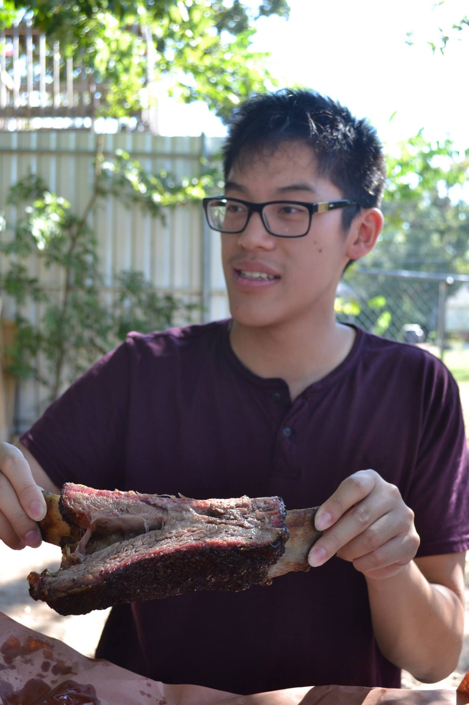

Dennis becomes a fatass with the natives
Dennis enjoys a smoked beef rib, pre-inunudated in BBQ sauce, in Austin, Texas. Dennis likes the taste of meat in his mouth.
Dennis enjoys a smoked beef rib, pre-inunudated in BBQ sauce, in Austin, Texas. Dennis likes the taste of meat in his mouth.